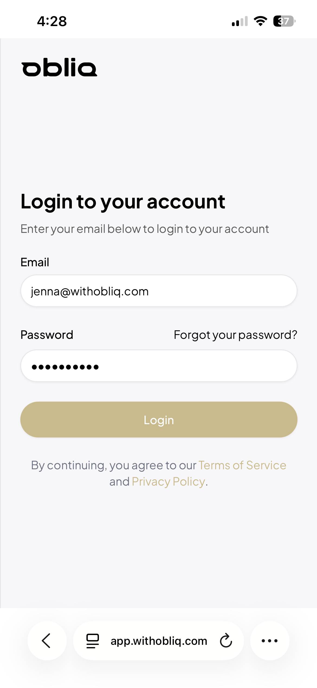
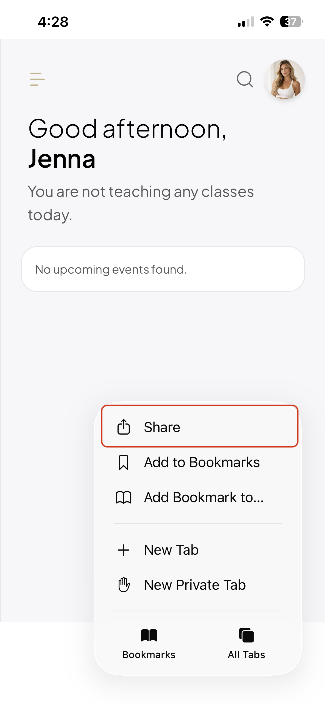
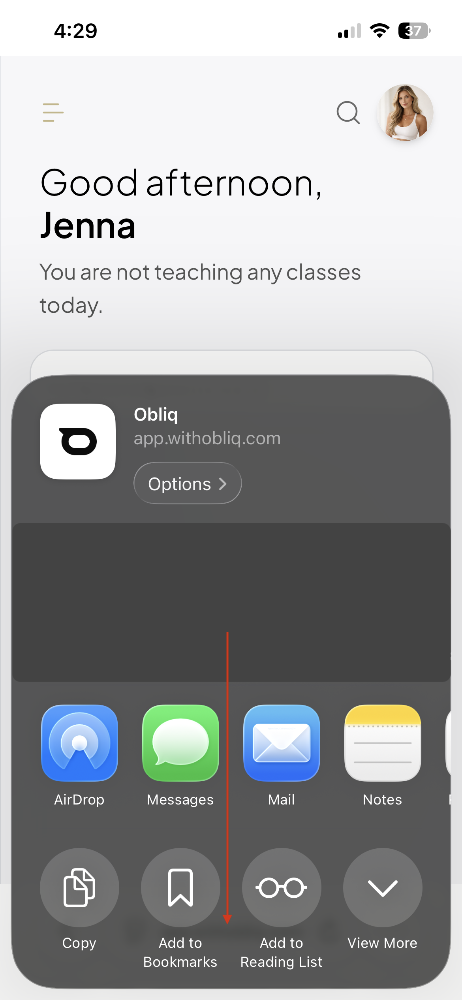
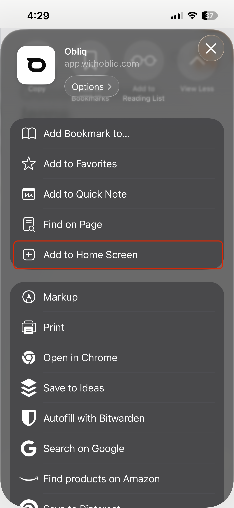
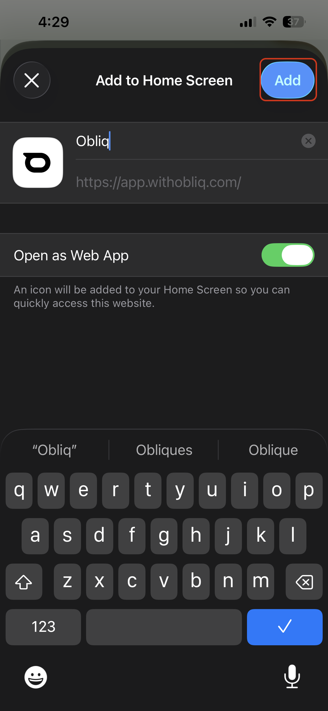
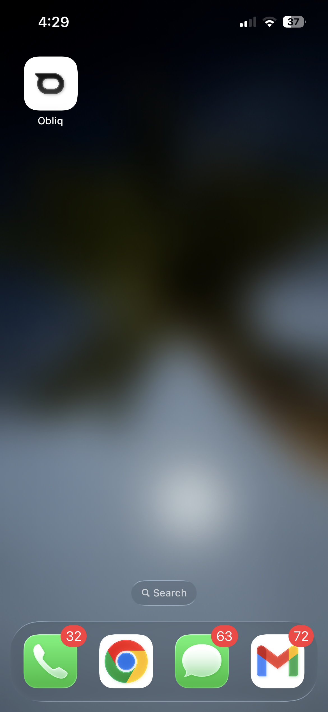

Adding Obliq to Your Homescreen
Obliq works as a web app that can be installed directly on your phone or tablet homescreen. Once installed, it opens full-screen without a browser address bar — just like a native app — and is always one tap away.
app.withobliq.com. Clients use your public booking page URL.
iPhone & iPad (Safari)
On iOS, you must use Safari to install a web app. The option is not available in Chrome or other browsers on iPhone and iPad.
Open Safari and navigate to the Obliq URL you want to install — either
app.withobliq.comfor the staff app, or your studio's booking page.
Tap the Share button — the square icon with an arrow pointing up — at the bottom of the screen. On iPad, it appears in the top toolbar.

Scroll down the share sheet and tap Add to Home Screen.


Edit the name if you like, then tap Add in the top-right corner.

The Obliq icon will appear on your homescreen. Tap it to open in full-screen mode.

Android (Chrome)
On Android, Chrome will often prompt you automatically to install the app when you visit Obliq. You can also install it manually at any time.
Open Chrome and navigate to the Obliq URL you want to install.
Tap the three-dot menu (⋮) in the top-right corner of the browser.
Tap Add to Home screen (some versions show this as Install app).
Confirm the name and tap Add. On some devices, you'll be asked to drag the icon into position on your homescreen.
Once installed, Obliq launches from your homescreen in a standalone window without the Chrome address bar.
Desktop (Chrome, Edge, or Safari)
On a Mac or Windows computer, you can also install Obliq as a desktop app.
Open Chrome or Edge and navigate to
app.withobliq.com.Look for the install icon in the browser address bar — it looks like a monitor with a down arrow. Click it.
Click Install in the prompt that appears.
Obliq opens in its own window and appears in your app launcher or taskbar. On Safari for Mac, use File → Add to Dock to pin it similarly.
Removing the app
To remove Obliq from your homescreen:
- iPhone/iPad: Long-press the icon → tap Remove App → Delete from Home Screen (this only removes the shortcut, not any data).
- Android: Long-press the icon and drag it to the Remove or Uninstall area at the top of the screen.
- Desktop: Right-click the app icon in your taskbar or app launcher → Uninstall.
Troubleshooting
"Add to Home Screen" is missing in Safari. Make sure you are using Safari — not Chrome, Firefox, or another browser. The option is only available in Safari on iOS.
The icon is a generic bookmark icon, not the Obliq logo. This can happen if the page hasn't fully loaded before you tap Share. Reload the page and try again.
The app opens in a browser tab instead of full-screen. This can happen if the URL you saved wasn't the root URL. Remove the icon and re-add it from app.withobliq.com directly.